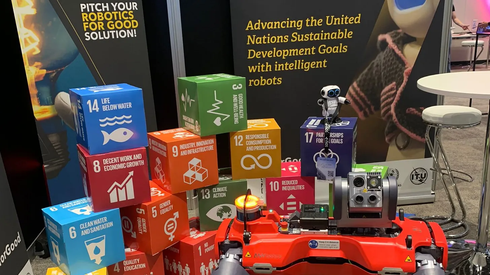

Robots that see, sort, and learn — helping communities waste less and reuse more. Explore how AI supports a more responsible way to consume and produce.
Try the Simulation
SDG 12 aims to manage natural resources efficiently and reduce global waste. It targets cutting food waste in half, managing chemicals safely, and encouraging companies to share sustainability reports. By changing how goods are made and used, this goal helps protect the planet from long-term environmental damage. "Responsible Consumption and Production" truly means doing more and better with fewer resources. It requires shifting away from a throwaway culture toward a circular economy where products are reused, repaired, and recycled. Ultimately, it asks every person, business, and government to choose long-term sustainability over short-term excess.
A simplified look at how a robotic arm and AI vision sort recyclables — toggle it off to see what happens without them.
An SDG 12 project for the OLIPS 2026 competition, exploring how banana peel waste can be turned into useful materials.
An OPSI 2026 research project on SDG 12 — "Pemanfaatan Limbah Kulit Pisang (Musa Paradisiaca) sebagai Bio-Leather Berbasis Near Field Communication (NFC) dalam Upaya Alternatif Penggunaan Bahan Kulit Binatang (Leather)."